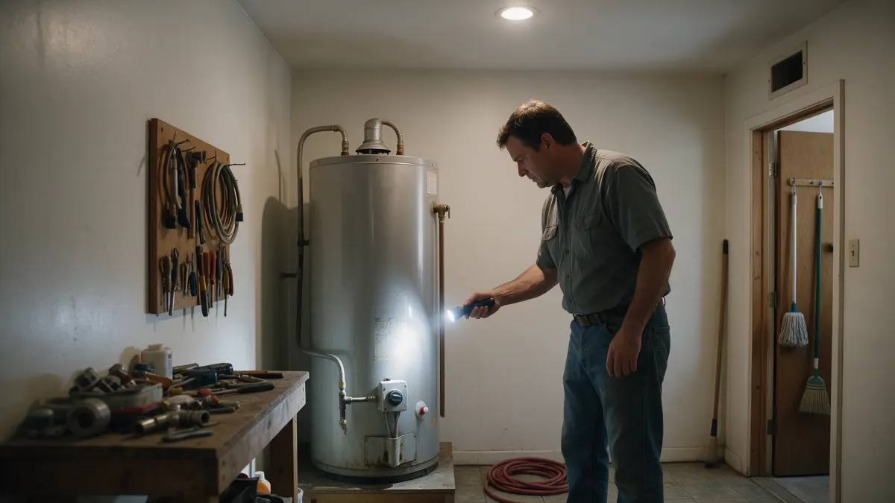

Water Heater Problems: A Colorado Homeowner Handbook

No hot water, strange noises or a puddle near the tank each point to different causes. This handbook helps Colorado homeowners read the symptoms, handle the safe first checks, and understand what changes the choice between repair and replacement. Plumbing Pros Colorado then connects you with independent local plumbers who work on tank and tankless water heaters in your area.
Symptoms and what they often mean
Lukewarm water can point to a failed heating element, a tripped breaker or a pilot or igniter issue. Rumbling or popping suggests sediment baked onto the bottom of the tank. Rust-colored hot water may mean the tank interior or anode rod is wearing out.
- Water not hot enough
- Hot water runs out quickly
- Popping or rumbling sounds
- Rusty hot water
- Moisture around the base
Notice when the problem began. Hot water that fades after a big laundry day suggests demand, while water that turned cold overnight suggests a part failure. Sharing that timeline helps the plumber narrow things quickly.
Safe checks before you call
On an electric unit, check the breaker and the reset button. On a gas unit, confirm the gas supply to the home is on and look at whether the pilot or display shows a fault. Never remove burner covers or tamper with gas fittings.
If you see water at the base, turn off power or gas to the heater, close the cold supply valve and place a bucket under the leak. A tank leaking from the shell is usually at the end of its life.
How a plumber approaches diagnosis
Expect questions about the age, fuel type, size and any earlier repairs. The plumber may test the elements, thermostats, gas valve and relief valve, check the venting on gas units, and look at the temperature and pressure relief valve discharge pipe.
A flush of the tank can show how much sediment has built up, which tells a lot about the water in your area.
What tips the decision between repair and replace
Age of the unit, the location of the leak, how many repairs it has had, and your household's hot water demand all matter. A bad thermostat on a middle-aged tank is a different conversation than a corroded shell.
Tankless models save floor space and supply a steady stream, but they need correct venting, gas supply and sometimes a larger line. Ask whether your home suits one before deciding.
Colorado conditions that shorten heater life
Hard water forms scale on elements and heat exchangers. At high altitude, gas burners need the right setup because thinner air changes combustion, which matters from Denver's mile-high elevation up to mountain towns like Estes Park and Breckenridge.
Periodic flushing and an anode rod check can extend a tank's useful life. The plumber you are connected with handles the work; we simply make the introduction.
Planning for the day it fails
Water heaters rarely fail at a convenient time, so it helps to know the make, model and age printed on the data plate before trouble starts. Take a photo of it and note the fuel type, tank size and venting arrangement.
Check that you can reach the shutoff valves and that the floor drain or drain pan is clear. Households that plan ahead often find the repair or replacement conversation with the plumber goes more smoothly, because the basic facts are already in hand.
Frequently asked questions
Why does my water heater make popping sounds?
Sediment collects at the bottom of the tank and traps water beneath it, which boils and pops. This is common where water is hard. A flush may help, though a heavily scaled tank may be near the end of its life.
Is it safe to turn the temperature up?
Higher settings raise scald risk, especially for children and older adults. Many households keep the setting moderate. If hot water runs short, ask the plumber about tank size, elements or a different type of unit instead.
What is the pressure relief valve for?
It opens if the tank pressure or temperature climbs too high, preventing a dangerous buildup. It should have a discharge pipe pointing safely down. If it drips often, tell the plumber, since it can signal pressure or expansion issues.
Do tankless heaters need maintenance in hard water areas?
Yes. Scale can clog the heat exchanger over time, so periodic descaling is common advice for tankless units. A water softener upstream can also reduce buildup. Ask the plumber what suits your home.
My heater is in the attic or garage. Does that matter?
Location affects freezing risk, drain pans, venting and how much damage a leak causes. Garage units in cold areas need protected lines, and attic units should have a pan and drain. Mention the location when you call.
Where is the anode rod and why does it matter?
It is a metal rod threaded into the top of the tank that corrodes first, protecting the steel lining. When it is used up, the tank itself starts to corrode. A plumber can inspect it and replace it if the tank is otherwise sound.
Related plumbing services
Water Heater Services by city
- Water leak repair in Woodland Park
- Water leak repair in Westminster
- Water leak repair in Lakewood
- Water leak repair in Golden
- Water leak repair in Conifer
- Water leak repair in Aurora
Ready to talk to someone? Call (720) 794-0974 or visit talk to a local plumber about your water heater.